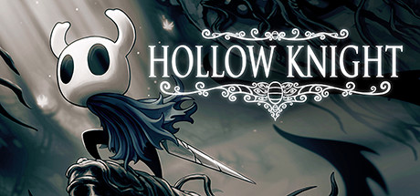

Hollow Knight
Introdução
VoltarHollow Knight é um jogo de ação-aventura estilo metroidvania desenvolvido pela Team17. O jogo se passa em um mundo subterrâneo chamado Hallownest, onde o jogador controla um pequeno inseto chamado Knight. O objetivo do jogo é explorar o mundo, desbloquear novas habilidades e enfrentar inimigos. Hollow Knight foi amplamente elogiado pela crítica e é considerado um dos melhores jogos de sua categoria.
O jogo é incomum dentro do gênero de ação-aventura já que não existem cidades e calabouços para serem explorados. Não existe também nenhum personagem com quem interagir e nenhum inimigo além dos Colossos para derrotar. Shadow of the Colossus foi descrito como um jogo de quebra-cabeças, já que a fraqueza de cada Colossus deve ser identificada e explorada para que ele seja derrotado.

Hollow Knight é um jogo indie de gênero metroidvania desenvolvido e publicado pela Team Cherry, lançado para Microsoft Windows, macOS e Linux em 2017 e, posteriormente, para Nintendo Switch, Playstation 4 e Xbox One em 2018. O seu desenvolvimento foi sustentado através de uma campanha no Kickstarter, onde arrecadou cerca de AU$57.000 até o final de 2014. No jogo, um cavaleiro sem nome explora um reino em ruínas habitado por insetos, desbloqueando habilidades novas que ajudam a explorar e livrar o reino de uma infecção causada por um deus esquecido. Até o início de 2019, Hollow Knight havia vendido 2,800,000 de cópias no mundo inteiro. Uma sequência chamada Hollow Knight: Silksong foi lançada em 2025.
Desenvolvimento
VoltarA ideia que inspirou a criação de Hollow Knight veio de um game jam, Ludum Dare 2013, no qual dois dos desenvolvedores do jogo, Ari Gibson e William Pellen, desenvolveram um jogo chamado Hungry Knight, no qual o personagem que viria a se tornar o cavaleiro matava insetos para fugir da fome O jogo, considerado "não muito bom", recebeu nota 1 de 5 no Newgrounds, mas atualmente possui nota 4 de 5. Os desenvolvedores decidiram trabalhar em outra game jam com tema "abaixo da superfície", mas perderam o prazo. Entretanto, o conceito trouxe a ideia de criar um jogo com ambientação subterrânmea, um reino "antigo e profundo", e com personagens insetos.
Influências do jogo incluem Faxanadu, Metroid, Mega Man X, e Zelda II, com o Team Cherry afirmando que queria replicar o senso de maravilha e descobrimento dos jogos de sua infância, onde "podia haver segredos incríveis ou criaturas estranhas".
Acreditanto que o controle do personagem era o mais importante para a diversão do jogador, os desenvolvedores basearam o movimento do cavaleiro em Mega Man X, não dando ao personagem aceleração (ou desaceleração) ao se mover horizontalmente, assim como um grande controle de movimento no ar e a habilidade de interromper um pulo usando um dash. A intenção era fazer o jogador achar que qualquer dano tomado poderia ter sido evitado até o último momento.
Para criar a arte do jogo, os desenhos de Gibson foram usados diretamente no motor do jogo, criando uma "sensação de lugar vívido", e os desenvolvedores decidiram manter o visual simples para prevenir o prolongamento do tempo de desenvolvimento. A complexidade do mundo foi baseada em Metroid, permitindo os jogadores ficarem desorientados e perdidos, focando na diversão em encontrar o caminho certo, e possuindo apenas poucos sinais básicos para direcionar os jogadores para locais importantes. O maior desafio de design foi criar o sistema de mapas e encontrar um equilíbrio entre não entregar os segredos do jogo e não deixar os jogadores completamente às escuras.
Hollow Knight foi revelado no Kickstarter em novembro de 2014, buscando a soma de AU$ 35 mil. O jogo ultrapassou este objetivo, arrecadando mais de AU$ 57 mil. A primeira versão beta foi lançada em setembro de 2015 e a campanha continuou a alcançar vários objetivos, adicionando mais conteúdo e permitindo a mudança de motor de jogo do Stencyl para Unity. Alguns dos conteúdos, como "The Abyss", apesar de não terem sido completamente cobertos pelos fundos da campanha, ainda conseguiram ser inseridos no jogo de maneira reduzida.
A região só é acessível através de uma pequena fenda nas montanhas ao norte, levando a uma enorme ponte de pedra. Esta ponte mede metade da distância da região e termina numa entrada para um grande templo chamado de "Templo de Adoração" localizado em seu centro. É, entretanto, proibido entrar na terra, que se particulariza por diversas características geográficas, como lagos, planaltos, desfiladeiros, cavernas e desertos, além de estruturas feitas pelo homem.
Lançamento
VoltarA versão do Nintendo Switch de Hollow Knight foi anunciada em janeiro de 2017 e lançada em 12 de junho de 2018. Team Cherry originalmente planejou disponibilizar o jogo no Wii U, com o desenvolvimento iniciando em 2016, junto da versão para PC, mas o foco eventalmente mudou para o Switch, com a desenvolvedora australiana Shark Jump Studios auxiliando no processo de portabilidade. Inicialmente, Team Cherry planejou que a versão do Switch chegasse "não muito depois do lançamento da plataforma", mas acabaram atrasando o lançamento para o início de 2018. Uma data de lançamento não foi anunciada até a apresentação da Nintendo Direct em 12 de junho de 2018, quando foi revelado que o jogo estaria disponível no mesmo dia através da Nintendo eShop.
Em 3 de agosto de 2017, o DLC Hidden Dreams (Sonhos Escondidos) foi lançado, apresentando dois novos chefes opcionais, duas novas músicas para a trilha sonora, um sistema de viagem rápida, e uma nova estação para ser descoberta. Em 26 de outubro de 2017, o DLC The Grimm Troupe (A Trupe Grimm) foi lançado, adicionando novas missões, novos chefes, itens, inimigos, além de suporte para os idiomas russo, português, e japonês. Em 20 de abril de 2018, o DLC Lifeblood (Sangue Vital) foi lançado, trazendo várias otimizações, mudanças na palheta de cores, conserto de bugs, assim como um novo chefe. Em 23 de agosto de 2018 foi lançado o último DLC, Godmaster (Deus Mestre), contendo novos personagens, chefes, música, um novo modo de jogo, e dois novos finais. Este DLC foi renomeado devido a preocupações com direitos autorais do nome anterior, Gods and Glory.
Recepção
VoltarAs versões de Hollow Knight para PC e PlayStation 4 receberam críticas "geralmente positivas", e as versões do Nintendo Switch e Xbox One receberam "aclamação crítica", de acordo com o agregador Metacritic. Jed Whitaker, do Destructoid, elogiou-o como "uma obra de arte dos jogos... e certamente uma arte digna de ir para um museu". Na PC Gamer, Tom Marks o chamou de "um novo clássico". Os críticos elogiaram bastante a atmosfera, visuais, som, e música, notando a grandeza do mundo do jogo.
Críticos avaliaram o sistema de combate como simples, sem surpresas[6] ou nuances; elogiaram a responsividade e o sistema de movimento. Na IGN, Tom Marks afirmou que "o combate em Hollow Knight é relativamente simples, mas inicia meio confuso... Ele te recompensa muito por sua paciência e habilidade". Na sua crítica para a PC Gamer, Marks elogiou o "brilhante" sistema de amuletos, afirmando que "o que é impressionante sobre esses amuletos é que você nunca acha uma combinação 'certa'. Não havia escolha errada." Nintendo World Report afirmou que "os amuletos oferecem uma grande variedade de melhorias ... Alguns amuletos ... eram tão essenciais, que removê-los parecia como trocar uma parte de mim mesmo por uma chance de vencer a próxima batalha".
A dificuldade de Hollow Knight recebeu atenção de alguns críticos e foi descrita como desafiadora; Vikki Blake, da Eurogamer, chamou o jogo de "implacavelmente duro, as vezes até injusto". Para a Nintendo World Report, Adam Abou-Nasr também achou que era injusto, chegando a escrever em suas anotações que o jogo era "tão frustrantemente difícil que eu não consigo recomendá-lo", mas "ele eventualmente fez sentido". Destructoid "nunca achou nenhum dos chefes injustos". Críticos de ambos Destructoid e Nintendo World Report se sentiram realizados após vencerem lutas difíceis. Críticos também fizeram comparações ao Dark Souls, mencionando a mecânica de perder todo o dinheiro após a morte e ter que derrotar a Sombra para recuperá-lo. Destructoid elogiou esta mecânica, assim como a magia de cura segurando um dos botões, porque "isso resolve alguns problemas que outros jogos possuem, havendo uma punição apropriada para suas falhas, e um sistema de risco e recompensa".
Premios
VoltarO jogo foi nomeado para "Melhor jogo de PC" na premiação "Jogo do Ano 2017" da Destructoid, e para "Melhor jogo de Plataforma" na premiação "Melhores de 2017" da IGN. Recebeu o prêmio de "Melhor jogo de Plataforma" da PC Gamer na premiação "Jogo do Ano 2017". Polygon nomeou-o entre os melhores da década.
| Ano | Premio | Categoria | Resultado |
|---|---|---|---|
| 2017 | SXSW Gamer's Voice Awards 2017 | Voz do Jogador (Single Player) | Nomeado |
| 2017 | The Game Awards 2017 | Melhor lançamento Indie | Nomeado |
| 2018 | Game Developers Choice Awards | Melhor Lançamento (Team Cherry) | Nomeado |
| 2018 | 14th British Academy Games Awards | Lançamento | Nomeado |
| 2018 | Golden Joystick Awards | Jogo do Ano para Nintendo | Nomeado |
| 2018 | Australian Games Awards | Jogo Independente do Ano | Venceu |
| 2018 | Australian Games Awards | Jogo do Ano Desenvolvido na Austrália | Venceu |
| 2019 | National Academy of Video Game Trade Reviewers Awards | Direção de Arte, Fantasia | Nomeado |